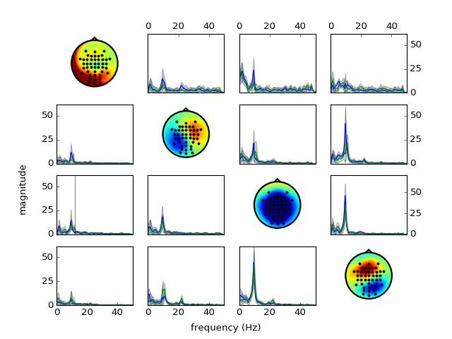

misc example code: statistics.py¶
(Source code, png, hires.png, pdf)
{kind=link}
{kind=link}

"""
This example shows how to create surrogate connectivity to determine if
connectivity is statistically significant.
"""
import numpy as np
import scot
import numpy as np
# The data set contains a continuous 45 channel EEG recording of a motor
# imagery experiment. The data was preprocessed to reduce eye movement
# artifacts and resampled to a sampling rate of 100 Hz. With a visual cue, the
# subject was instructed to perform either hand or foot motor imagery. The
# trigger time points of the cues are stored in 'triggers', and 'classes'
# contains the class labels. Duration of the motor imagery period was
# approximately six seconds.
import scotdata.motorimagery as midata
raweeg = midata.eeg.T
triggers = np.asarray(midata.triggers, dtype=int)
classes = midata.classes
fs = midata.samplerate
locs = midata.locations
# Set random seed for repeatable results
np.random.seed(42)
# Prepare data
#
# Here we cut out segments from 3s to 4s after each trigger. This is right in
# the middle of the motor imagery period.
data = scot.datatools.cut_segments(raweeg, triggers, 3 * fs, 4 * fs)
# Set up analysis object
#
# We choose a VAR model order of 35, and reduction to 4 components.
ws = scot.Workspace({'model_order': 35}, reducedim=4, fs=fs, locations=locs)
fig = None
# Perform MVARICA and plot components
ws.set_data(data, classes)
ws.do_mvarica(varfit='class')
p = ws.var_.test_whiteness(50)
print('Whiteness:', p)
fig = ws.plot_connectivity_topos(fig=fig)
p, s, _ = ws.compare_conditions(['hand'], ['foot'], 'ffDTF', repeats=100,
plot=fig)
print(p)
ws.show_plots()